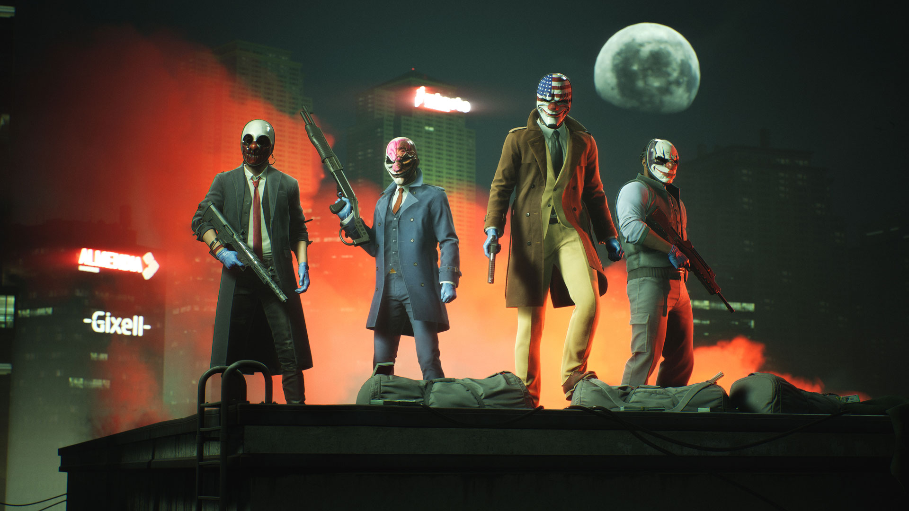

PAYDAY 3
A PAYDAY 3 egy rendkívül várt új játék a PAYDAY videójáték sorozatban, amely egy co-op FPS játék, mint az elődjei. A Starbreeze Studios fejlesztette, a Deep Silver adta ki, és a játék az akciódús bűnözői világot az akkoriban legújabb konzolok és PC-k világába hozta el. A PAYDAY 3 a sorozat előző részeire, a PAYDAY: The Heist-ra és a PAYDAY 2-re építve, továbbfejlesztett játékmenettel, mélyebb történettel és frissített grafikával köszöntötte a játékosokat. A játékosok ismét a hírhedt PAYDAY rablóbanda tagjaiként merészkednek be a világ sötét sarkaiba, hogy bonyolult rablásokat hajtsanak végre, magasabb tétekkel és újnál újabb helyszínekkel.
- Műfaj: FPS (első személyű lövöldözős), kooperatív
- Platformok: PC, Xbox Series X/S, PlayStation 5
- Fejlesztő: Starbreeze Studios
- Kiadó: Deep Silver
- Megjelenés: 2023. szeptember 21.

Játékfunkciók
Játékmenet
A PAYDAY 3-ban ismét a PAYDAY banda tagjaként kell végrehajtanod többnél-több veszélyes rablást. A játékmenet kooperatív, tehát barátokkal együtt kell összedolgoznotok a tökéletes bűntettek végrehajtásához. Új mechanikák és egy fejlettebb mesterséges intelligencia is belekerült a játékba, hogy igazán izgalmas, dinamikus legyen a játék. Minden egyes döntésnek súlya van, és a sikerhez elengedhetetlen a csapatmunka, mindezek mellett rengeteg akcióval és adrenalinnal.

Grafika és művészeti tervezés
A grafika is komoly frissítést kapott, és a városok, helyszínek élethűbbek mint még valaha. A környezetek részletgazdagok, a fények és az árnyékok pedig kiemelik a játék feszültséggel teli légkörét. New York forgalmas utcáitól kezdve a titkos bázisokig mindent alaposan kidolgoztak, hogy a rablások még izgalmasabbak legyenek.
Hang és zene
A hangtervezés is kiemelkedő, az akciót kísérő zene és a környezet zajai még inkább beleélhetik a játékosokat a rablások feszültségébe. A szinkronhangok jól hozzák a karakterek egyedi személyiségét, és visszatérnek a régi, jól ismert szereplők, miközben új, érdekes karakterek is csatlakoznak a bandához.
Multiplayer és online funkciók
A PAYDAY 3 legnagyobb ereje a kooperatív játékmenetében rejlik. Lehetőséged van barátokkal vagy idegenekkel összeállni, és közösen megtervezni és végrehajtani a rablásokat. A dinamikus nehézségi szint és a ranglisták is arra ösztönöznek, hogy folyamatosan fejlődj a csapatoddal együtt.

Összehasonlítás más Triple-A játékokkal
A PAYDAY 3 egyedülálló abban, hogy a legtöbb népszerű lövöldözős játékkal szemben nem az egyéni teljesítményre, hanem a csapatmunkára épít. Ha összehasonlítjuk például a Call of Duty-val, ott inkább a gyors akció és a verseny dominál, míg itt minden rablás előtt meg kell tervezni minden egyes lépést, és valóban együtt kell működni a csapattal.
Történet
A Payday 3 ott veszi fel a fonalat, ahol a Payday 2 abbamaradt: a banda tagjai szétváltak, és úgy döntöttek, maguk mögött hagyják a bűnöző életet. Csakhogy amikor elárulják őket, és elveszítik minden pénzüket, nincs más választásuk, vissza kell térniük ahhoz, amit a legjobban tudnak: a rabláshoz.
Az eredeti négyes: Dallas, Chains, Wolf és Hoxton újra összeáll, és csatlakozik hozzájuk néhány ismerős arc a Payday 2-ből (Joy, Houston, Clover és Jacket), valamint egy teljesen új karakter, Pearl is csatlakozik a rablóbandához.
A történet főként a 2020-as években, New Yorkban játszódik, ahol már nem elég csak simán betörni valahová, mivel a komolyabb biztonsági rendszerek, kamerák és a digitális világ, valamint a kriptovaluta felkapottsága is új szintre emeli a rablásokat. Ez még izgalmasabbá, ugyanakkor kihívásokkal telibbé is teszi a visszatérésüket a bűn világába.
Fogadtatás és kritikák
Kritikai fogadtatás
A PAYDAY 3 jól szerepelt a kritikákban, hiszen a legtöbb szakmai oldal dicsérte a friss játékmenetet, a kooperatív élményt és a vizuális újításokat. A GameSpot és az IGN is pozitívan nyilatkoztak róla, bár pár technikai problémát és szerverhibát említettek, amiket a fejlesztők igyekeznek javítani.
Rajongói fogadtatás
A rajongók örömmel fogadták a visszatérő karaktereket és a régi rablásokat, de voltak, akik sajnálták, hogy néhány régebbi funkciót eltávolítottak. Mindezek ellenére a többség elégedett volt a játékkal, és úgy érezték, hogy méltó folytatása a sorozatnak.
Díjak
Bár csak egy év telt el a megjelenése óta, a PAYDAY 3 már számos díj jelölést kapott és nyert, a PAYDAY 3 nyerte a "Legszórakoztatóbb Játék" és a "Legjobb PC-játék" díjat a Gamescom Awardson.
Kihívások és kritikák
Bár a játék rengeteg pozitív visszajelzést kapott, nem mentes a kisebb hibáktól. Néhányan szerverproblémákról számoltak be, ami néha megnehezítette a kooperatív élményt. Emellett a mikrotranzakciók is megosztották a közösséget, de a fejlesztők ígéretet tettek, hogy a későbbi frissítések javítani fogják a helyzetet.